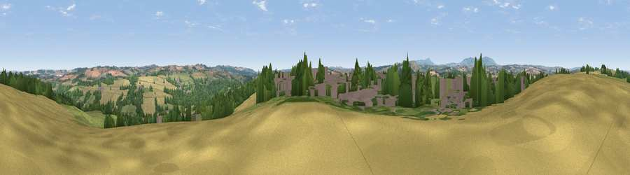

Viewpoint near Highley
#22958 in England · top 52% of its area beats it · near HighleyWhere it is
The exact computed spot (SO 73625 84625). Click the marker for map links.
The view, rendered

A 360° render of this exact spot computed from the terrain model, tree cover and land cover — summer colours, afternoon light, calibrated against photographs of famous viewpoints. Real trees, hedges and buildings will differ in detail.
The panorama
Grey silhouette: terrain skyline in each direction (720 bearings, Earth curvature and refraction included). Dashed green: skyline with trees (+15 m) and buildings (+8 m) as obstacles. Blue strip: how far the ground is visible on each bearing.
Where the view opens
Wedge length = distance to the farthest visible ground on that bearing (vegetation-aware). Rings at 10, 25 and 50 km.
What fills the view
32% cropland · 30% grassland · 27% woodland · 10% built-up
Angular shares of the visible panorama (visual magnitude), not map area. Landscape diversity 0.58 (0–1 Shannon).
Key numbers
More beautiful places nearby
The staircase of upgrades: each row has a higher view potential than everything closer. Driving times are estimates from straight-line distance, calibrated against real road routing — check an actual route before setting out.
| Place | Direction | Drive | Score |
|---|---|---|---|
| Viewpoint near Hampton Loade | NNW · 1 km | ~4 min | 59.6 |
| Viewpoint near Chorley | SW · 5 km | ~10 min | 60.6 |
| Viewpoint near Chorley | SW · 5 km | ~11 min | 64.9 |
| Knowle Hill | SW · 5 km | ~11 min | 75.5 |
| Viewpoint near Burwarton | W · 14 km | ~25 min | 83.4 |
| Titterstone Clee | WSW · 16 km | ~28 min | 83.8 |
| Viewpoint near Little Wenlock | NNW · 26 km | ~42 min | 86.6 |
| North Hill | S · 38 km | ~57 min | 86.8 |
52.45893, -2.38959 · source: screening · position refined by local search. Computed location — check access rights before visiting.